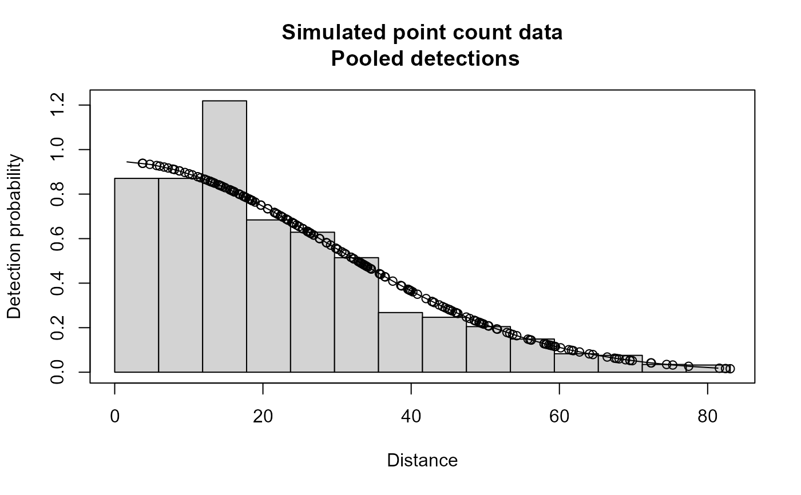

Simulated removal observer point count data with detection p(0)=0.8; hn sigma=30; w=100 for both observers with dependency y>0, gamma=0.1
Format
The format is 408 obs of 6 variables: distance: numeric distance from center observer: Factor w/ 2 levels "1","2": 1 2 1 2 1 2 1 2 1 2 ... detected: numeric 0/1 person: Factor with 2 levels A,B pair: Factor with 2 levels "AB" BA" object: sequential object number
Examples
# \donttest{
data(ptdata.removal)
xx <- ddf(mrmodel=~glm(formula=~distance),
dsmodel = ~cds(key="hn", formula = ~1),
data = ptdata.removal, method = "rem",
meta.data = list(point=TRUE))
#> Warning: no truncation distance specified; using largest observed distance
summary(xx)
#>
#> Summary for rem.fi object
#> Number of observations : 204
#> Number seen by primary : 195
#> Number additional seen by secondary : 9
#> AIC : 69.33598
#>
#>
#> Conditional detection function parameters:
#> estimate se
#> (Intercept) 1.19813958 0.7821458
#> distance 0.07245812 0.0327875
#>
#> Estimate SE CV
#> Average primary p(0) 0.9462658 0.06457123 0.06823794
#>
#>
#>
#> Summary for ds object
#> Number of observations : 204
#> Distance range : 0 - 83.04828
#> AIC : 1744.474
#> Optimisation : mrds (nlminb)
#>
#> Detection function:
#> Half-normal key function
#>
#> Detection function parameters
#> Scale coefficient(s):
#> estimate se
#> (Intercept) 3.366348 0.0383046
#>
#> Estimate SE CV
#> Average p 0.2394111 0.01708192 0.07134975
#> EDR 40.6352360 1.44965694 0.03567487
#>
#>
#> Summary for rem object
#>
#> Total AIC value = 1813.81
#> Estimate SE CV
#> Average p 0.2265465 0.02236647 0.09872793
#> N in covered region 900.4772670 104.77563511 0.11635567
plot(xx,main="Simulated point count data")

# }